AI Academy · Level 1 · Grade 6 · Week 34 · Student lesson
Test Edge Cases and Fairness
Learn to understand, design, build, test and explain AI systems responsibly.
Project: Helpful Classroom Sorter
Before you start
Week 16: review can be an expected result rather than a mistake.
Plan time to read, investigate and explain. Keep predictions separate from observations.
Student lesson · 1 of 17
Your mission
Your learning target
I can choose tests just below, at and above a decision boundary.
I can distinguish valid no-match requests from invalid input.
I can use labelled catalogue variations to examine previously untested paths.
Remember before reading
Close your notes first. A rough first answer helps us choose the right starting point; it is not a score for your ability.
Without opening the old lesson, explain one key idea from Test Normal Cases. Give an example and a mistake that the idea helps you avoid.
Without opening the old lesson, explain one key idea from Design the Decision Process. Give an example and a mistake that the idea helps you avoid.
Without opening the old lesson, explain one key idea from Humans Set Boundaries. Give an example and a mistake that the idea helps you avoid.
After trying, check the relevant lesson or ask your teacher. Change the part of your explanation that the evidence shows was wrong.
Unusual and underrepresented cases reveal hidden assumptions.
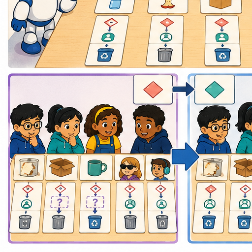
Learner name:
Readiness for the connected explanation
Why can four successful routine cases leave a mistake undiscovered?
This week’s end goal
By the end, I can design boundary and coverage tests instead of assuming routine success is enough.
Student lesson · 2 of 17
Notice the evidence
PICTURE STORY
Look Closely Before You Explain
Pictures give clues; evidence tells us what the clues mean.

What do you notice?
Name three visible details without explaining them yet.
Circle the detail most connected to the system's decision.
Name one detail that may be decoration or distraction.
Make a first prediction and state the clue that supports it.
My observations, prediction, and evidence:
A closer explanation
Routine examples can miss a mistake at an exact limit. This week you will choose revealing cases around those limits and vary the paper catalogue to reach later successful outputs. Write expected results from the requirements before operating the prototype. Keep its saved instructions and each test record so a failure remains useful evidence.
Catalogue B version 1 is unchanged: B1 Bookmark drawing, 10 minutes, quiet Yes; B2 Story circle, 8 minutes, quiet No; B3 Pattern puzzle, 12 minutes, quiet Yes; B4 Tower challenge, 15 minutes, quiet No. Search in that order. These fictional paper values assume materials are available. Inputs are whole minutes from 0 to 30 inclusive and Quiet required Yes or No. No allows quiet or nonquiet activities.
Time fits when required minutes are no more than available minutes, including equality. The quiet condition must also hold. Select the first fitting row with a correct reason, or report no match after every row fails. Invalid or missing input requires clarification before searching. P1 validates, resets to the first row, checks both conditions, advances after failure and stops at the first fit or catalogue exhaustion. No output books or publishes anything.
Student lesson · 3 of 17
See how it works
VISUAL MECHANISM
Input → Process → Output
Follow the information instead of imagining magic inside the machine.
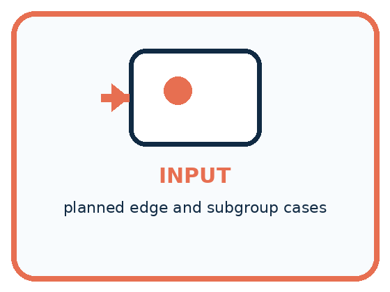
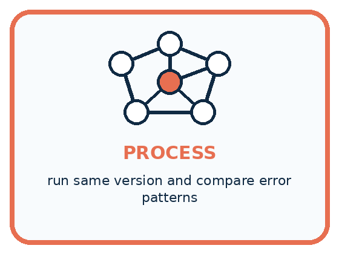
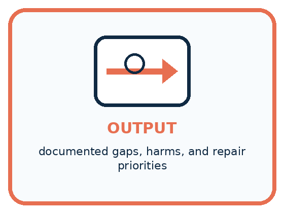
INPUT planned edge and subgroup cases
PROCESS run same version and compare error patterns
OUTPUT documented gaps, harms, and repair priorities
Draw a fresh example with all three stages:
A closer explanation
Three requests around ten minutes
For quiet requests, 10 minutes is the first time a catalogue activity fits. Test 9, 10 and 11 with Yes so only the time changes. A faulty comparison S version 0 uses strictly less than instead of no more than for time, while keeping the other P1 rules. It rejects B1 at exactly 10. With quiet required, every later row also fails, so it incorrectly reports no match.
S can pass all four routine requests from Week 33: 11 Yes, 9 No, 6 No and 9 Yes. None has a fitting activity whose duration equals the request. The 10 Yes case reveals a gap those passes did not close. Another useful boundary is 8 minutes with No: equality should allow B2, while 7 No has no match. Keep both quiet values in your wider plan because No does not mean nonquiet only.
Connect the picture and the explanation
Point to the input, the deciding step and the result in this week’s visual. Explain the same step in ordinary words. A picture helps when you can say what each part represents.
Student lesson · 4 of 17
Compare the cases
PICTURE GALLERY
Four Cases, Four Clues
Use the visual cue, then read the evidence carefully.
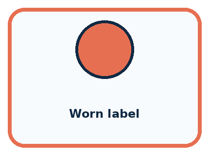
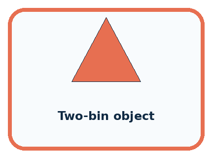
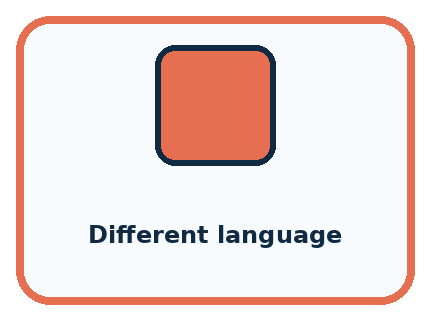
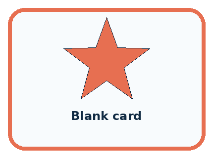
CASE 1 — Worn label Clue: text partly missing. Meaning: degraded input.
CASE 2 — Two-bin object Clue: categories overlap. Meaning: boundary case.
CASE 3 — Different language Clue: label format changes. Meaning: access/fairness case.
CASE 4 — Blank card Clue: required input absent. Meaning: missing-data case.
Which two pictures are easiest to confuse? What evidence separates them?
Change one thing in the pictured case
Change: Faulty code uses duration strictly below available time.
Prediction: Request 6 now wrongly returns none.
Reason: A’s duration equals the available time and should be eligible under at most.
Student lesson · 5 of 17
Words that unlock the idea
VOCABULARY
Words You Can See and Use
The badge is a memory cue; the definition does the real thinking work.
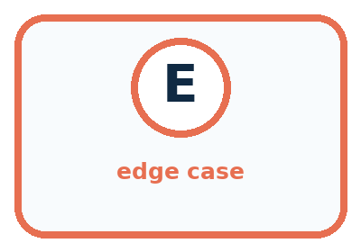
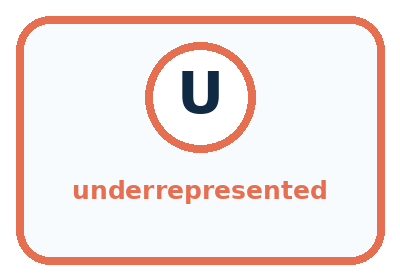
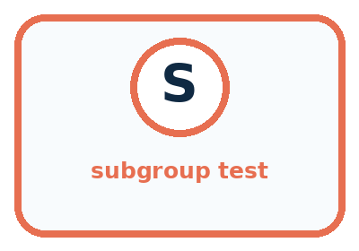
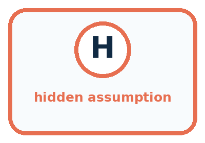
| Word | Meaning | My example |
|---|---|---|
| edge case | unusual input near a system limit | |
| underrepresented | rare or absent in design evidence | |
| subgroup test | check for one relevant condition or user group | |
| hidden assumption | unstated belief revealed by failure |
Misconception detective
CLAIM TO REPAIR Rare cases do not matter.
Use one vocabulary word and one piece of evidence to repair it:
Words used in the closer explanation
| Word | Meaning |
|---|---|
| Boundary | A value where an input changes category or a condition changes truth |
| Inclusive | Including the stated endpoint or equal value |
| Invalid input | A value that does not meet the agreed input rules |
| Test variation | A documented change in the conditions used for a test |
| Coverage gap | A relevant condition or behaviour the current tests have not examined |
Student lesson · 6 of 17
Follow a worked example
WORKED EXAMPLE
Watch the Reasoning, Not Just the Answer
Every step connects a claim to observable evidence.

STEP 1 — OBSERVE planned edge and subgroup cases
STEP 2 — TRACE run same version and compare error patterns
STEP 3 — CONCLUDE documented gaps, harms, and repair priorities
What new evidence could change this answer?
A closer explanation
| Request using catalogue B | Expected response | Reason |
|---|---|---|
| 0 minutes Yes | No match | Zero is valid; every activity needs more time |
| 30 minutes Yes | B1 with a matching reason | 30 is valid; B1 is the first fit |
| 31 minutes Yes | Clarify minutes; no search | 31 is outside the accepted range |
| Blank minutes with Yes | Clarify minutes; no search | The time field is missing |
| 10.5 minutes Yes | Clarify minutes; no search | The accepted time must be a whole number |
| 10 minutes with blank quiet | Clarify quiet; no search | Choose Yes or No before searching |
The accepted range and activity durations are different kinds of boundary. Zero belongs to the valid range even though no activity fits. Thirty also belongs to it. A negative time, such as minus one minute, is below zero and invalid. Do not change a blank to zero, round 10.5 to 10 or turn a blank quiet choice into No. Ask for the field to be corrected and start a new validated run.
A test record should say whether a search is expected to begin. Clarification should name the field needing correction; it should not claim the catalogue has no suitable activity. Test an unrecognised quiet value such as Maybe as well as a missing value. These check different forms of unusable input.
Learn from the worked case
Cover the result before checking it. Say what is given, choose the procedure, and follow one step at a time. Then uncover the result and explain your first mismatch. Ask why a step is allowed, not only what number it produces.
A pictorial worked case: Test Edge Cases and Fairness
A fictional craft-book chooser accepts requests for whole available minutes from 0 to 20.
The facts we will use
Booklet A takes 6 minutes; B takes 12. Return first duration at most available time.
Check 5,6,7; also 0,20,21 and blank. Same catalogue applies to every user.

Read the picture one step at a time
Why this result follows
Adjacent values below, at and above 6 expose an accidental strict inequality. Zero is valid even though no activity fits. The top valid input does not require selecting the longest activity: catalogue order still controls selection. Coverage also asks whose conditions were tested, which cannot be inferred from these numbers alone.
What this example does not establish
Equal written rules do not prove equally good outcomes for every group; actual condition-specific evidence is still needed.
Read the labelled picture: Which single boundary run most directly detects the strict-comparison bug, and why?
Change one thing: Faulty code uses duration strictly below available time. Predict the result before checking the explanation. What remains the same?
Student lesson · 7 of 17
Find and repair a mistake
COMPARE
Same Result, Different Reason
A comparison helps reveal the true concept boundary.
| Case | Evidence | What it shows |
|---|---|---|
| Worn label | text partly missing | degraded input |
| Two-bin object | categories overlap | boundary case |
| Different language | label format changes | access/fairness case |
| Blank card | required input absent | missing-data case |
Repair two tempting claims
CLAIM A Rare cases do not matter.
Repair:
CLAIM B One special test represents every member of a subgroup.
Repair:
A closer explanation
Label each case by its purpose: time equality, accepted-range endpoint, invalid field or catalogue variation. Record the exact catalogue version and request, the expected output and explanation, and what actually happened. Compare the prototype with the manual baseline under identical conditions. Count every attempted case, retain failures, and distinguish cases not yet run from successful tests.
These are development tests that can guide repairs. Keep any final evaluation cases reserved by your teacher separate until the prototype version is fixed for evaluation. Even a broad development set does not establish real-world enjoyment, material availability or speed. Next week you will repair a located defect and check whether the change breaks behaviour that worked before.
Student lesson · 8 of 17
Practise together
GUIDED PRACTICE
Try It, Check It, Explain It
Use support now so you can succeed independently later.

Explain how the picture story demonstrates this idea: Unusual and underrepresented cases reveal hidden assumptions.
Use a fresh example to explain edge case.
Trace a new input → process → output example.
Find and repair the error in: One special test represents every member of a subgroup.
Invent one edge case and name the safe response.
A closer explanation
In B version 1, earlier B1 always fits whenever B3 or B4 could be chosen. To test a successful later-row path, make a labelled copy of the catalogue. Keep the input rules, both compatibility conditions and first-match rule unchanged. Both the prototype and manual baseline must read the same test copy. Do not overwrite the original catalogue or reuse its expected answers for the changed data.
Test copy B version 2 changes only B1’s duration from 10 to 20 minutes. All other rows, quiet labels and order stay as in version 1. For 12 Yes, B1 is now too long, B2 is not quiet, and B3 fits exactly and is quiet. The expected first suggestion is B3. This checks a third-row success and equality under a documented variation.
Practise with less help: Check the validation boundary
Use workbook W2 for the connected example “Testing boundaries and varied conditions”. First fill the input and rule boxes. Try the middle steps before asking for a hint. After a hint, try the next step yourself.
| Plan | Do | Check |
|---|---|---|
| What is given? Which rule or procedure applies? | Record each intermediate step. | Does the result follow? What remains unknown? |
Explain your trace to a partner. Your partner points to one step to check. Swap roles on the next case. Each person writes their own explanation.
Check your reasoning
Use the worked case for Testing boundaries and varied conditions. Proposed explanation: “At the limit means outside the rule”. Decide whether this explanation is supported. Point to the step or supplied fact that decides; explain your repair if needed.
Answer on your own before discussion. If you are unsure, say which step you need help with.
Explain the picture
Which single boundary run most directly detects the strict-comparison bug, and why?
This is supported practice. Keep the separately named independent case for an attempt before feedback.
Student lesson · 9 of 17
Run the investigation
EXPLORER LAB
Edge and Fairness Test Pack
Predict first, test honestly, and explain what the evidence means.

State your prediction before the result is known.
Complete the task: Add missing, ambiguous, and subgroup test cards.
Keep a normal case and an edge case clearly separated.
Record what happened—even when it does not match your prediction.
Explain the result, one limitation, and the next useful test.
| Case | Prediction | Observed result | What it means |
|---|---|---|---|
| Normal | |||
| Edge |
Plan → try → check
Before trying: what do I expect, and why? While trying: which step could first go wrong? Afterwards: what did I actually observe, and what should change? Keep “not run” if you only traced the procedure.
Student lesson · 10 of 17
Build your understanding
PRACTICE LADDER
Climb from Recall to Defense
Each step asks for a stronger kind of understanding.

RECALL Define edge case.
EXPLAIN Unusual and underrepresented cases reveal hidden assumptions.
TRACE Show the input, process, and output.
DIAGNOSE Repair: Rare cases do not matter.
TRANSFER Apply the idea to a new home or classroom case.
CREATE Design one revealing test.
DEFEND Give a claim, evidence, mechanism, limit, and safe action.
Student lesson · 11 of 17
Connect your project
PROJECT
Helpful Classroom Sorter
Build one coherent system across the year, one evidence-based decision at a time.

What real classroom need does this serve?
What information is necessary—and what should stay private?
What happens inside the process?
What normal and edge cases will you test?
When should it say not sure or ask a person?

My project decision:
Evidence for your project
Add sorter boundary cases, missing fields and relevant user conditions to the test plan before making fairness claims.
Student lesson · 12 of 17
Show what you know
MASTERY
Fresh-Case Independent Proof
Complete this after teaching and guided practice have ended.

□ Name or draw the fresh case.
□ Trace input, process, and output.
□ State the conclusion and strongest evidence.
□ Name one limit, failure, missing clue, or fairness/privacy concern.
□ Explain one safe next action or improvement.
Independent evidence:
My level: □ Not yet □ With one hint □ Independently □ I can teach it
Student lesson · 13 of 17
Study a complete case
Week 34 Worked case
Use the supplied details to practise the weekly concept before attempting the independent question. This case extends the illustrated lesson.
The situation
A sorter handles clean paper but fails on crumpled paper and mixed packaging.
The question
Design revealing tests.
Worked explanation
Use separately labelled clean, crumpled and mixed cases with expected outputs or review actions declared first. Compare conditions.
Explain it in your own words
Which detail supports the answer, and why does it matter?
Trace the supplied case visually
Test conditions that reveal limitations
| Evidence or stage | Value or result |
|---|---|
| Clean paper | Routine case |
| Crumpled paper | Changed condition |
| Mixed packaging | Ambiguous material |
| Expected action | Declare tray or review before testing |
A sorter handles clean paper but fails on crumpled paper and mixed packaging.
Design revealing tests.
Use separately labelled clean, crumpled and mixed cases with expected outputs or review actions declared first. Compare conditions.
Student lesson · 14 of 17
Try a new case independently
Independent case: Find an independent capacity boundary
A new equipment selector lists E1 first, capacity 4; E2 second, capacity 8. Valid group size is a whole number from 1 to 10. Choose the first item whose capacity is at least the group size, or no match; invalid input needs clarification. A faulty version uses capacity strictly greater than group size. Independently give correct and faulty outputs for groups 3, 4 and 5, then for group 8. Explain the defect and give the correct response to group 0. No booking occurs.
Attempt this case before feedback. Record any help. Earlier examples below are further practice; a case already practised with feedback cannot establish fresh transfer.
Week 34 Independent application
Close the worked explanation. Apply the idea to this different question without copying.
A sorter works on clear photos. Test a blurred pencil, a dim book and an unfamiliar lunch box. What makes these useful tests?
My answer, with a trace, calculation or supporting evidence
Create and test
Change one relevant detail. Predict the result before testing. Include a boundary or missing-information case when it helps reveal a limit.
My changed input and expected result
Connect to your project
Expand the sorter test suite with edge, missing-data, and fairness cases plus expected safe behavior.
The evidence I will keep
Your teacher has the independent answer and scoring criteria. Complete the matching workbook week to keep your practice evidence together.
Transfer practice from the original programme
Before testing, define outcomes for clean paper, metal foil, mixed packaging and an unreadable card. The team later changes mixed packaging's expected result to match its sorter. Explain the evaluation problem.
Use feedback to improve
Attempt the independent case before hints. Record whether you worked alone, used a hint or followed a model. After feedback, fix the first unsupported step and explain why it changed. A later check uses a changed case, not a copied answer.
Student lesson · 15 of 17
Your lesson route
Start with this question: A fictional craft-book chooser accepts requests for whole available minutes from 0 to 20.
| By the end, I can | How I will show it |
|---|---|
| Choose tests just below, at and above a decision boundary | Explain the deciding step, show a trace or test, and state one limit. |
| Distinguish valid no-match requests from invalid input | Explain the deciding step, show a trace or test, and state one limit. |
| Use labelled catalogue variations to examine previously untested paths | Explain the deciding step, show a trace or test, and state one limit. |
Remember → watch and explain → try with help → investigate → try independently → keep project evidence. Your teacher may spread this lesson across several classes.
Keep your first prediction. Compare it with what the evidence shows and explain any change.
Student lesson · 16 of 17
Finish and return
Close your notes. Explain this goal in your own words: Choose tests just below, at and above a decision boundary
If you are unsure, return to the worked picture and explain one arrow. If you are ready, change an input or assumption and justify your prediction.
Save your workbook evidence. At the next review, try a different case before opening your old answer.
Student lesson · 17 of 17
Supported practice, repair and portfolio
Use this supported practice once, in the browser or on paper. Keep the reserved independent assessment for a separate first attempt before teacher feedback.
A fictional craft-book chooser accepts requests for whole available minutes from 0 to 20.
Practice 1: explain the deciding evidence
Which labelled step matches this detail? Record each user condition tested; do not invent unrun outcomes.
1. Near a boundary
2. Invalid inputs
3. Coverage record
4. Valid extremes
Hint if needed: Read the steps in the pictorial case. Match the supplied detail to the stage that performs or records it.
After your attempt, compare with the supported explanation: Coverage record Record each user condition tested; do not invent unrun outcomes. Adjacent values below, at and above 6 expose an accidental strict inequality. Zero is valid even though no activity fits. The top valid input does not require selecting the longest activity: catalogue order still controls selection. Coverage also asks whose conditions were tested, which cannot be inferred from these numbers alone.
Practice 2: explain the deciding evidence
Changed-case practice: Faulty code uses duration strictly below available time. Which conclusion is supported by the supplied facts?
1. This one example guarantees correct results for every future input.
2. We can decide the result without examining the changed input or the procedure.
3. Request 6 now wrongly returns none.
Hint if needed: Use the changed condition and the deciding step in the pictorial trace. The answer must say what follows from those facts.
After your attempt, compare with the supported explanation: Request 6 now wrongly returns none. A’s duration equals the available time and should be eligible under at most.
Repair a missing building block
Review Test Normal Cases (ai-1/33). Goal: Plan routine cases with expected results derived from the requirements. Short practice: Why is none correct for 8 but incorrect for 6? Use both capacity cards.. Return to this week and explain what you changed.
Review Design the Decision Process (ai-1/31). Goal: Design a decision process that covers valid, invalid and no-match requests. Short practice: Where does the first original rejection occur, and why is K3 not originally selected?. Return to this week and explain what you changed.
Review Humans Set Boundaries (ai-1/28). Goal: Distinguish a system’s capability, the correctness of its output and permission to take an action. Short practice: Which original proposal is authorised? Why do the other two need separate approval?. Return to this week and explain what you changed.
Keep your completed work
Use Download completed work in the hosted lesson to export your answers, reflections, practice feedback and code-run evidence. Open the HTML copy to read or print it. Drafts stay in this browser when storage is available; clear drafts on a shared device.